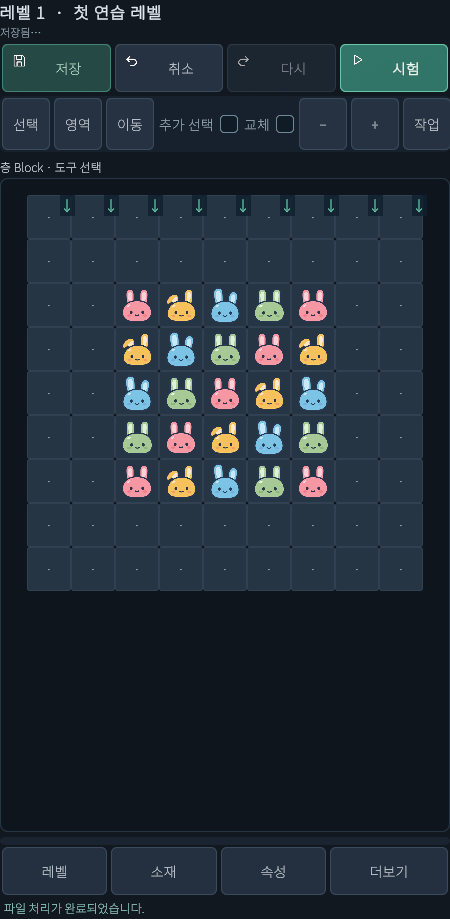
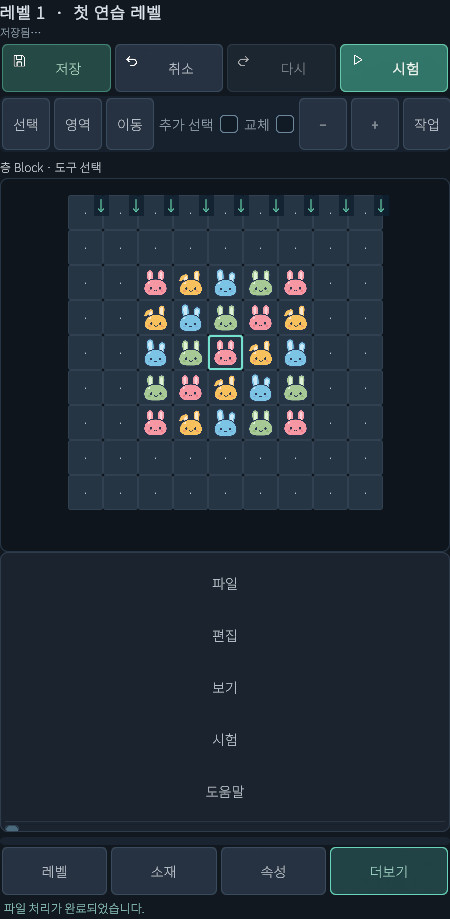
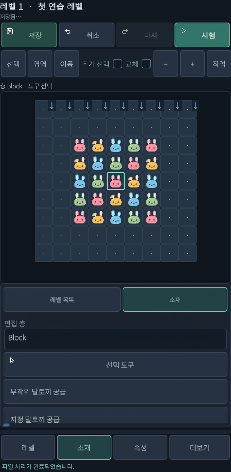
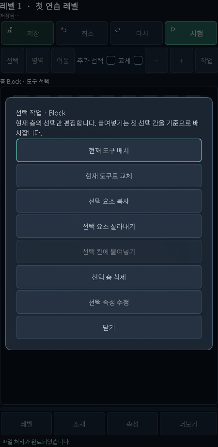

추가 · 현재 씬 기반 레벨툴
Android 터치 조작
마우스 없이 레벨을 고르고 블록을 놓고 복사하고 저장합니다.
기준2026.10.15 현재 UI · Windows / Android 레벨툴
휴대폰에서 어디를 누르나요?

- 상단 저장 / 취소 / 다시 / 시험: 저장 / 실행 취소 / 다시 실행 / 게임 시험입니다. 여기의 취소는 앱 종료가 아닙니다.
- 보드 위 가로 도구줄: 선택 / 영역 / 이동 / 추가 선택 / 교체 / − / + / 작업 / 취소입니다. 오른쪽이 안 보이면 가로로 스크롤하세요. 이 줄의 취소는 진행 중 터치·영역 지정을 취소합니다.
- 하단 레벨: 레벨 선택·새 레벨·복제.
- 하단 소재: 편집 층과 놓을 요소 선택.
- 하단 속성: 선택 속성·레벨 설정.
- 하단 더보기: 파일·편집·도움말 메뉴, 작업 화면 탭, 시험 입력. 패널 안에서 세로 스크롤합니다.
좁은 세로 화면은 패널이 아래, 좁은 가로 화면은 옆에 열립니다. 공간이 충분한 넓은 화면은 보드·좌우 패널을 함께 보여줍니다. 같은 하단 버튼을 다시 누르면 패널을 닫습니다.
시작·저장·다른 기기로 옮기기

- 더보기 → 파일 → 새 프로젝트에서 내부 프로젝트 이름을 입력하거나 프로젝트 ZIP 가져오기로 받은 작업을 엽니다. 생성 화면 보기
- 상단 저장으로 앱 내부에 JSON을 보관합니다. Windows 경로를 입력할 필요가 없습니다.
- 기기 밖에 보관하려면 더보기 → 파일 → 프로젝트 ZIP 내보내기를 누릅니다. ZIP 순서 자세히 보기
블록 한 개 놓기

- 하단 레벨에서 대상 레벨을 고르고 소재를 누릅니다.
- 편집 층 → Block을 선택하고 목록을 스크롤해 지정 달토끼 공급을 누릅니다. 속성 → 선택 속성 → 배치 색에서 원하는 Type 색을 고릅니다.
- 소재·속성 패널만 닫고 빈 칸을 짧게 눌렀다가 같은 칸에서 뗍니다. 소재를 고르면 이미 배치 모드입니다. 여기서 보드 위 선택 버튼을 누르면 배치 도구가 해제되므로 소재를 다시 골라야 합니다.
- 손을 뗄 때 배치가 확정됩니다. 누른 채 끌어 다른 곳에서 떼거나 두 손가락으로 전환하면 처음 탭은 취소됩니다.
- 배치를 끝내면 소재의 선택 도구로 돌아가 칸만 고릅니다. 실수는 상단 취소로 실행 취소합니다.
기존 블록 교체·작업 메뉴

캡처는 작업 버튼으로 연 메뉴입니다. 실제 손가락 롱터치 장면은 아닙니다.
- 소재에서 바꿀 도구를 고르고 대상의 편집 층을 확인합니다.
- 방법 A: 보드 위 교체를 켜고 기존 칸을 탭합니다. 마치면 교체를 꺼 실수를 방지하세요.
- 방법 B: 칸을 약 0.6초 길게 눌러 작업 메뉴를 열고 현재 도구로 교체를 누릅니다. 어렵다면 칸을 선택하고 도구줄의 작업을 누르면 같은 메뉴가 열립니다.
- 지우려면 선택 층 삭제를 누릅니다. 다른 층 전체를 지우는 버튼이 아니므로 층·대상을 확인합니다.
- 닫기는 메뉴만 닫습니다. 이동 도구·흐름·튜토리얼 칸 지정 중에는 길게 누르기가 일반 작업 메뉴를 열지 않을 수 있습니다.
여러 칸을 골라 복사·붙여넣기
- 소재에서 선택 도구로 돌아가고 보드 위 영역을 누릅니다.
- 네모의 첫 모서리 칸, 반대 모서리 칸을 차례로 탭합니다. 사이의 직사각형을 선택합니다. 한 손가락으로 칠하듯 끄는 방식은 아닙니다.
- 기존 선택에 더하려면 추가 선택을 켭니다. 잘못 시작하면 도구줄 오른쪽 취소로 영역 지정을 취소합니다.
- 작업 → 선택 요소 복사를 누릅니다. 2×2 본체는 통째로 복사됩니다.
- 선택 도구로 붙일 기준 칸 하나를 고르고 작업 → 선택 칸에 붙여넣기를 누릅니다. 복사한 층으로 맞춥니다.
- 경계 밖·충돌·참조 오류는 전체 배치를 취소합니다. 위치를 바꿔 재시도하세요. 복사는 같은 편집 세션용이며 기기 간 전달은 ZIP을 씁니다.
확대·축소와 보드 이동
- 확대·축소: 두 손가락을 벌리거나 오므립니다. 또는 도구줄 − / +를 누릅니다.
- 보드 이동: 두 손가락을 함께 끕니다. 또는 이동 도구에서 한 손가락으로 끕니다.
- 다시 배치: 이동을 마치면 소재에서 놓을 도구를 다시 고릅니다. 보드 위 선택 버튼은 배치를 해제하고 칸만 고르는 도구입니다.
- 제스처 전환·회전: 진행 중 한 손가락 탭·영역 지정이 취소될 수 있습니다. 레벨 자체를 새로 만드는 것은 아닙니다.
저장하고 게임 시험하기
- 상단 저장 후 저장됨을 확인합니다.
- 더보기에서 스크롤하여 게임 시험 입력 → 현재 편집본 JSON을 선택합니다.
- 상단 시험을 누릅니다. 오류가 표시되면 고친 후 재시도합니다. MemoryPack과 차이
- Android 뒤로 가기는 맨 위 메뉴·팝업 또는 현재 작업부터 처리합니다. 여러 번 무작정 누르지 말고 안내를 읽고 편집 화면으로 돌아오세요.
헷갈릴 때
- 롱터치 메뉴가 안 열림: 일반 배치 화면에서 선택 후 작업 버튼을 사용하세요.
- 메뉴·교체 버튼이 안 보임: 하단 더보기, 패널 세로 스크롤, 도구줄 가로 스크롤을 확인하세요.
- 새 블록이 안 놓임: 층·소재·선택/이동 상태, 기존 요소 여부를 보세요. 기존 요소는 교체를 명시적으로 사용합니다.
- 입력이 저장되지 않음: 숫자를 고치고 한글 조합을 마친 뒤 입력칸 밖을 누르고 저장하세요.
- 외부 키보드: 도움말 → 단축키 안내를 참고하세요. 터치만으로도 작업 메뉴를 사용할 수 있습니다.
- 앱 도움말에 터치가 후속 단계라고 표시됨: 일부 이전 단계 문구가 남아 있습니다. 이 문서와 현재 작업 메뉴를 기준으로 사용하세요. 이번 문서 작업에서는 앱 코드를 바꾸지 않았습니다.
변경 이력
| 변경일 | 변경 항목 | 이전 → 현재 | 이유 |
|---|---|---|---|
| 2026.10.15 | 현재 씬 레벨툴 안내 | 추가 · JSON·ZIP·터치 조작과 현재 화면 안내 | 현재 UI에 맞춘 초보자 설명 요청 |
설명 편집·화면 확인: 2026.10.15 · ServeredMeridian / Windows / Unity 6000.3.10f1.
Windows 씬 UI 캡처, 별도 연습 프로젝트 JSON 저장·재로드, 공통 ZIP 처리 왕복 문서 일치 확인. 모바일은 에디터에서 같은 UI를 모바일 배치로 표시했습니다. Android 실기기 터치·키보드·시스템 파일 선택과 Windows 시스템 파일 선택기 실제 조작은 이번 작업에서 확인하지 않았습니다. 브라우저 도구의 로컬 파일 접근 제한으로 넓은 화면·좁은 화면의 HTML 렌더링은 미검수입니다.